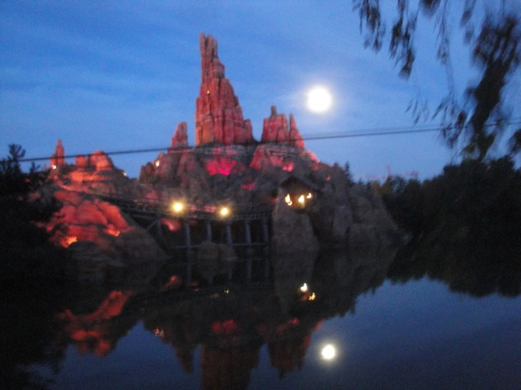

| |
Big Thunder Mountain Review

We're here at Disneyland Paris. Today's ride we'll be reviewing for you is Big Thunder Mtn. One of the finest mine trains. And not only are all the Thunder Mountains the best mine trains out there, but the Paris Big Thunder Mountain is the best one of them all. YAY!!! =) After getting in the cars, we're off. Then you head around a turn and into a tunnel. You go down a couple dips in the dark, along with some cool sound effects and whistling trains. Once you reach the lifthill, you see all sorts of cool lights and other cool rock formations. However, after climbing the lifthill, you slowly rise out of the tunnel and head for the first drop. But as you are about to go through it, you notice that something is not right. Then you twist out of the first drop. As you spiral down gaining speed, it all comes clear to you now. EVERYTHING HERE IS BACKWARDS!!!!! Then you go around a left turnaround. Then you get a good pop of airtime afterwards. While it's not Coaster Ejector airtime, it's still alot of fun. Then you turnaround again, and dip into a brake run. Fun fact about this Thunder Mountain, it's actually all on an island. That's just plain cool. Cause this is normally, the part of the ride that'd be in a tunnel. Hey. Cool. =) We head around another dip, go around a turn and rise up a hill. We pass by a cool train. And hey. Look who I see. The Thunder Mountain Goat!!! And look, he's not planning on commiting suicide via dynamite here. I'm happy to hear that the Thunder Mountain goat has finally seeked mental help to treat his depression. Actually, I think he just doesn't want to kill himself because he's not in America anymore. And now all the Hyper-Crazy-Patriots will send me death threats for that joke. =) We then climb lifthill #2. During that climb, you can see the track you're about to go through. Anyways, we then twisting down the second drop. After that, you head up and pass the lifthill. Then you just slam into Thunder Mtn's FAKE HELIX OF DEATH!!!!!! This fake helix of death is extra cool since it has two tunnels in it! After that winding and spiraling, you bounce up into a little hill before hitting the brakes. Then you turnaround and go up lifthill #3. While it's a mild bummer that there's no shaking here, but hey. I'm happy. Then you slowly crest the lifthill. You wait for the rest of the car to leave the lift before you head down another twisted drop. Wee!!! Then you go through another turnaround, and head into another tunnel. TAKE THE TUNNEL!!!!! Inside, you head down another drop. Wee!!! This is just a ton of fun. Just hope you don't get stuck in here. ;) We then head around another turn in the dark, before rising up, heading off the island, back on the mainland, and we glide through the brake run and around to the station. This is by far the best of the three Big Thunder Mountains that I have ridden. The theming is just so damn good. Not to insult the American Thunder Mountains, but WOW!!! And on top of that, I just love the island it's on, and that tunnel at the end is just so fun. This is a fantastic mine train, a real Disney Classic and I highly reccomend riding it if you're visiting Disneyland Paris.
7/10
Location: Disneyland Paris
Opened: 1992
Built by: Vekoma
Last Ridden: July 02, 2012
Big Thunder Mountain Photos

Home
|